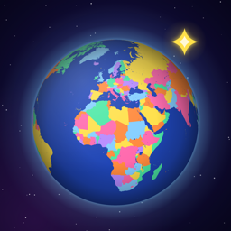

Nomaded
Your travel passport on a living 3D globe. Mark the countries you’ve been to and watch your world fill with color.
Need help?
Found a bug, missing a city, or have an idea? Write to me. I read every message, in English or Russian.
leon.aksim@gmail.comQuestions
How do I mark a country?
Tap it on the globe and press Mark as visited. You can also find it with the search button in the top right corner. Tiny countries such as Monaco or Vatican City appear as dots when you zoom in.
How do I remove a mark?
Tap the country, then the round button with the check mark, and confirm.
How do I add a city?
Tap a country and press + City. The list starts with the country’s largest cities; type to find any other. Adding a city marks its country as visited.
Why 195 countries?
The 193 member states of the United Nations, plus Vatican City and Palestine. Other places, such as Greenland or Puerto Rico, are territories: you can mark them too, and they’re counted separately.
Why did a medal disappear?
Medals are for reaching a number of countries or a new continent. If you unmark countries and drop below that number, the medal goes away, and it comes back when you get there again.
Why are some borders drawn differently?
Some borders are disputed, and in some countries the law says how maps must show them. Nomaded follows the law of the App Store region the app comes from.
Where is my data? Will it move to a new iPhone?
Everything stays on your iPhone: there’s no account and no server. When you move to a new iPhone from a backup or with Quick Start, your countries move with it. Deleting the app deletes them. More in the Privacy Policy.
Does it need the internet?
No. Only the city search goes online, to Apple Maps, for places that aren’t in the app’s own list of cities.